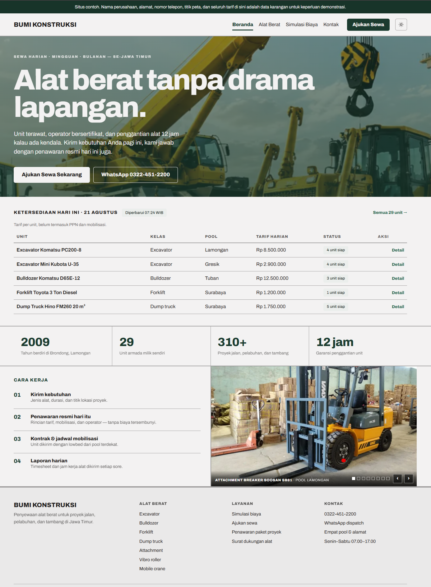
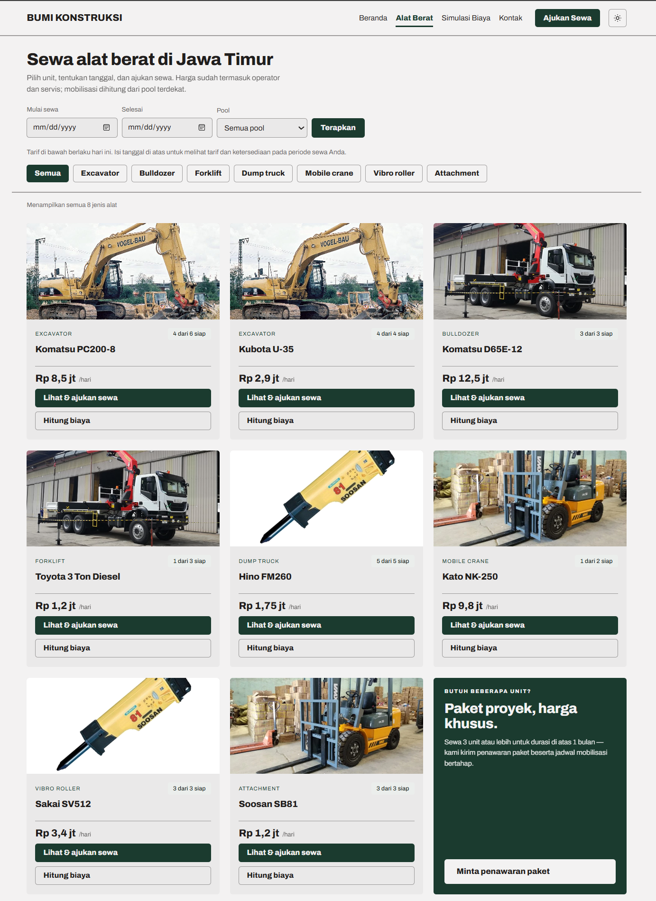
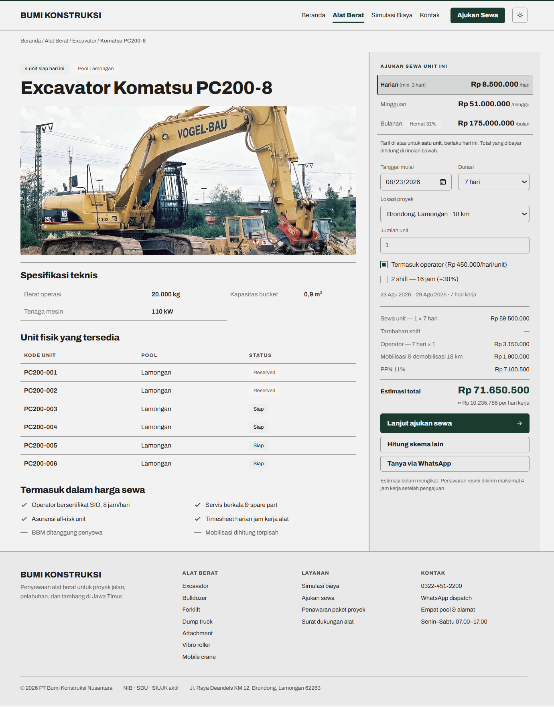
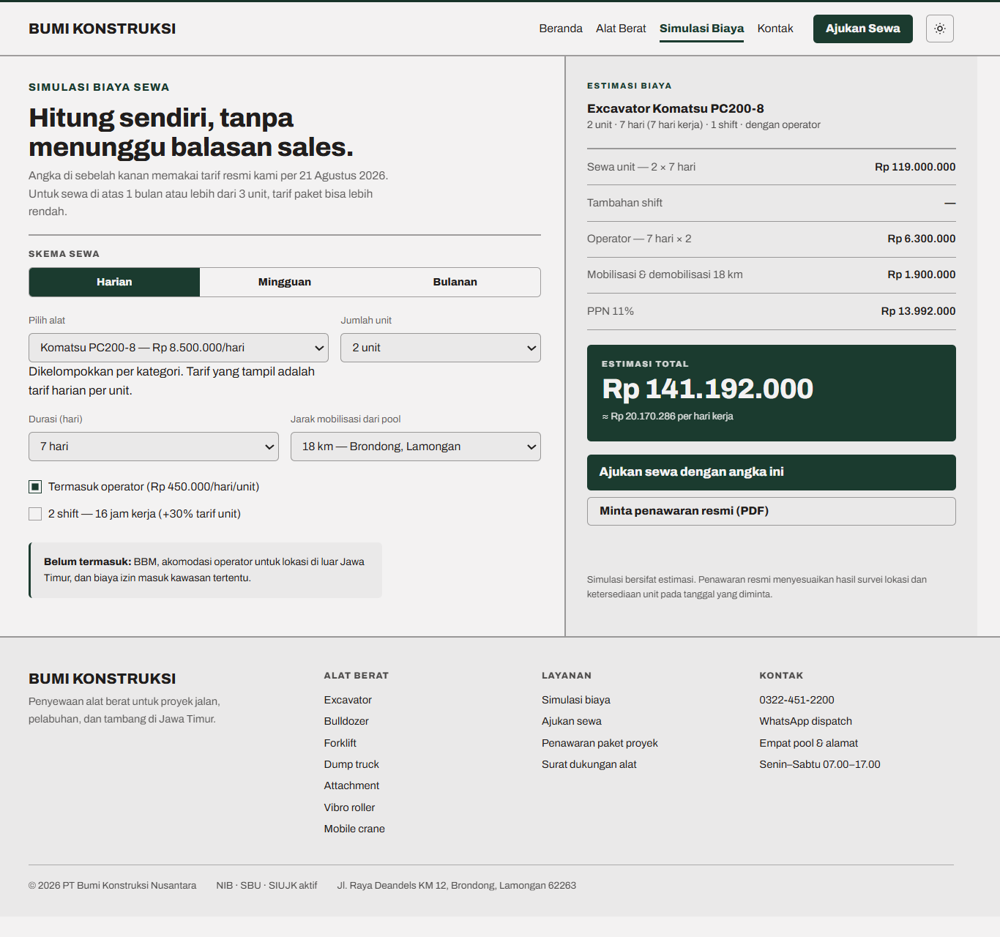
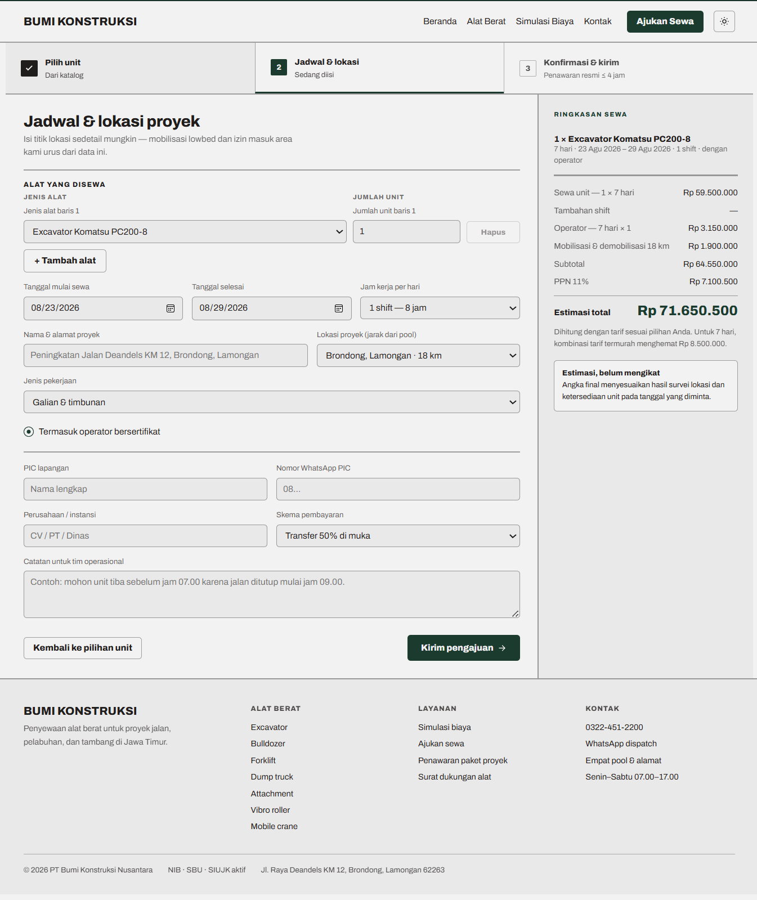
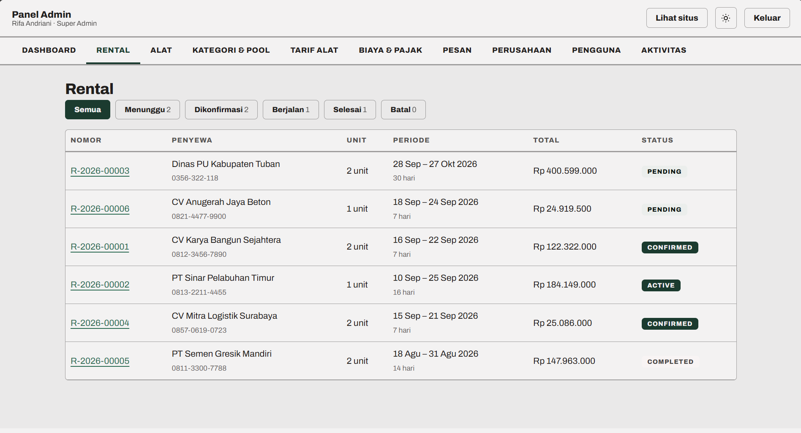
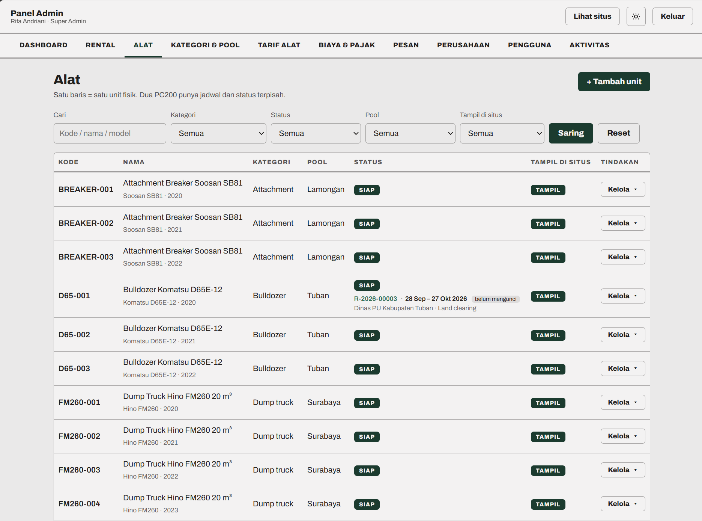
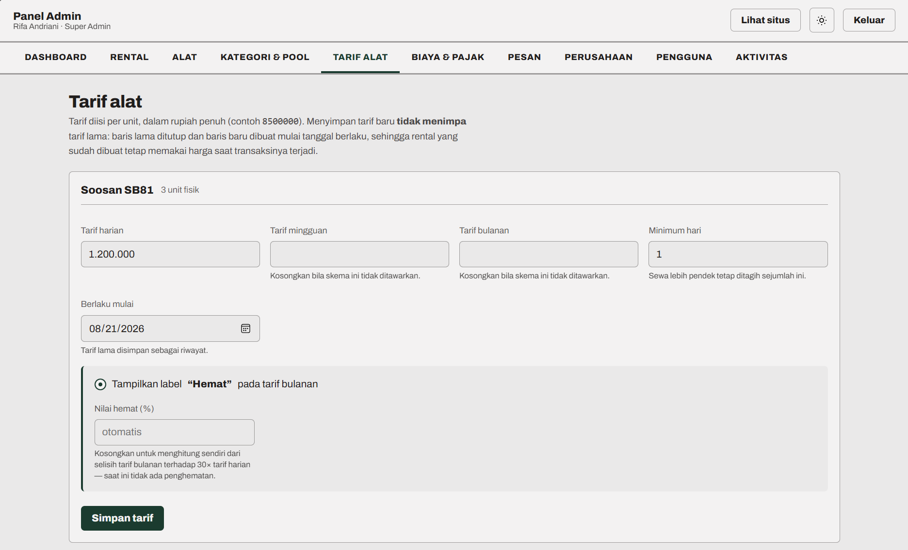

Katalog yang menunjukkan ketersediaan
Saring menurut jenis alat dan pool. Isi rentang tanggalnya, dan yang tampil hanya unit yang benar-benar bebas pada tanggal itu.
Situs sewa alat berat + panel operasional
Calon penyewa memilih alat, tanggal, dan lokasi proyeknya sendiri — lalu melihat perkiraan biayanya sebelum menghubungi siapa pun. Permintaannya masuk langsung ke panel tim, lengkap dengan unit mana yang dipesan dan kapan. Tidak ada lagi jadwal yang tersimpan di kepala masing-masing.
Dua sisi: halaman yang dilihat penyewa, dan panel yang dipakai tim.
Saring menurut jenis alat dan pool. Isi rentang tanggalnya, dan yang tampil hanya unit yang benar-benar bebas pada tanggal itu.
Pilih durasi, jumlah unit, lokasi proyek, operator, dan jam kerja — angkanya berubah seketika. Sewa unit, operator, mobilisasi, dan pajak dirinci satu per satu.
Kalau menyewa 7 hari lebih murah pakai tarif mingguan, sistem mengatakannya beserta selisihnya. Pilihan tetap di tangan penyewa.
Excavator, dump truck, dan breaker bisa diminta sekaligus dalam satu permintaan — tidak perlu mengirim tiga kali.
Seluruh pool dalam satu peta, lengkap dengan alamat dan tautan rute untuk tiap titiknya.
Tampilan menyesuaikan layar ponsel sampai desktop, dengan mode terang dan gelap.
Dua excavator dengan tipe sama punya jadwal, status, foto, dan riwayatnya masing-masing — karena memang begitu kenyataannya di lapangan.
Setiap pengajuan dari situs muncul di daftar rental beserta rincian biayanya, sekaligus menyiapkan pesan WhatsApp berisi rincian yang sama.
Saat dikonfirmasi, ketersediaan diperiksa sekali lagi. Kalau unitnya keburu diambil rental lain, konfirmasinya ditolak — bukan diteruskan lalu ketahuan di lapangan.
Status rental bisa maju dan mundur. Semua pilihan tindakan ditampilkan, yang tidak berlaku dimatikan beserta alasannya.
Menaikkan harga membuat catatan baru dengan tanggal berlaku. Rental yang sudah jalan tetap memakai angka saat disepakati.
Sales, operasional, admin, dan pemilik melihat menu yang berbeda. Yang tidak boleh diakses tidak ditampilkan sama sekali.
Siapa mengubah tarif apa, kapan, dari berapa jadi berapa — tersimpan lengkap beserta nilai lama dan barunya.
Nama perusahaan, alamat, nomor telepon, tarif, area layanan, foto alat, dan pajak diubah sendiri tanpa perlu menyentuh kode.
Klik nama halaman untuk berpindah.








Seluruh angka, nama perusahaan, alamat, dan nomor telepon pada gambar di atas adalah data karangan yang dibuat khusus untuk pratinjau ini.
Membuka katalog, memilih alat dan tanggal, mengisi lokasi proyek. Perkiraan biayanya langsung tampil — termasuk operator, mobilisasi, dan pajak. Tidak perlu menelepon hanya untuk bertanya harga.
Pengajuan muncul di daftar rental dengan status menunggu, lengkap dengan unit yang diminta, tanggalnya, dan rincian biayanya. Rinciannya juga tersedia untuk dikirim lewat WhatsApp ke tim.
Saat dikonfirmasi, ketersediaan diperiksa sekali lagi. Kalau unitnya keburu diambil rental lain, konfirmasi ditolak dan tim tahu saat itu juga. Kalau lolos, unit itu terkunci untuk tanggal tersebut.
Unit ditandai berjalan saat sudah di lokasi, dan selesai saat kembali — jadwalnya otomatis terbuka lagi untuk penyewa berikutnya. Harga yang tersimpan tetap harga saat disepakati.
Punya armada sendiri di satu atau beberapa pool, dan jadwalnya masih diurus lewat catatan, papan tulis, atau grup obrolan.
Banyak waktu tim habis menjawab pertanyaan tarif yang sama berulang-ulang sebelum penyewa benar-benar serius.
Armadanya sudah cukup banyak sehingga siapa memakai unit mana, sampai kapan, mulai sulit diingat.
Ingin punya company profile yang layak dilihat calon klien, tapi enggan mengurus dua aplikasi terpisah.
Semuanya diisi lewat panel, tanpa menyentuh kode. Aplikasinya sudah berisi data contoh supaya bisa dicoba dulu sebelum diisi data asli.